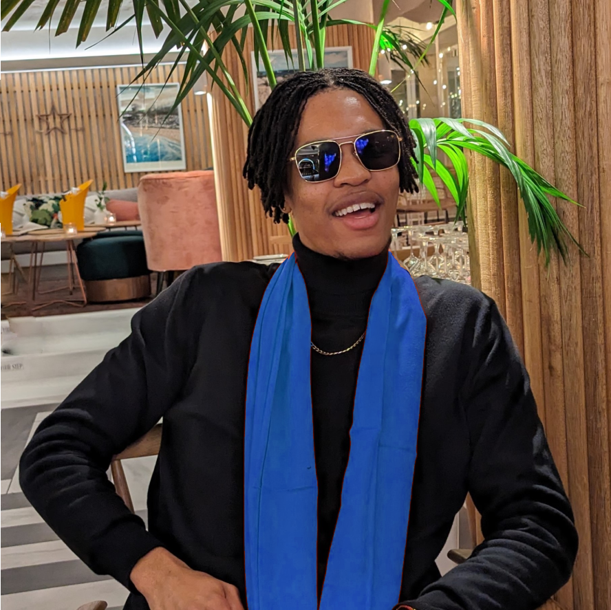
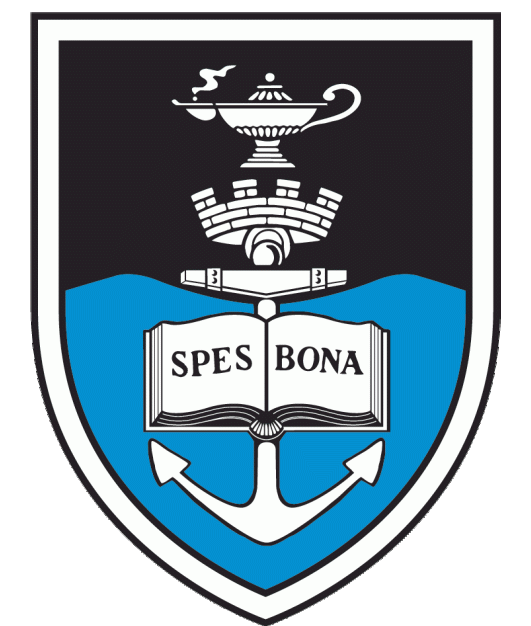
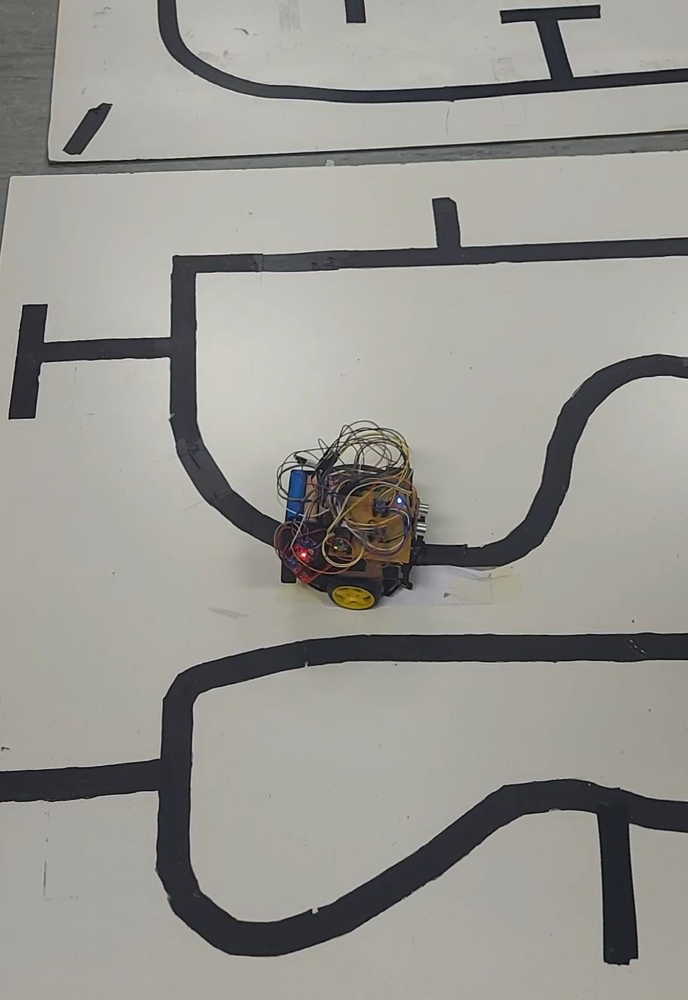
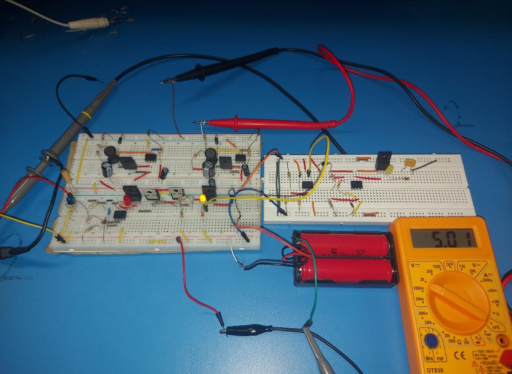
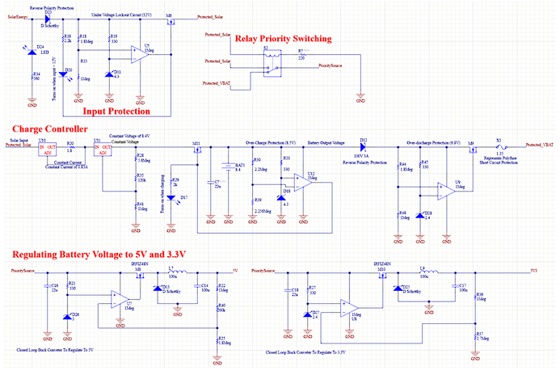

About Me
Hey There!I'm Thatohatsi Motlhamme
Final-year Mechatronics Engineering student at the University of Cape Town, driven by a passion for leveraging technology to solve complex problems. My multidisciplinary background in mechanical, electrical, and computer engineering has equipped me with a versatile skill set, including proficiency in various programming languages, circuit design, and 3D mechanical modelling. As a hardworking and enthusiastic engineer, I'm constantly motivated by the challenge of finding innovative solutions to real-world problems.
My interests in robotics, control systems, and emerging technologies like AI and machine learning are the driving forces behind my career aspirations. I'm always eager to learn and take on new challenges, whether it's exploring the latest trends in technology or diving into a new project.
My interests in robotics, control systems, and emerging technologies like AI and machine learning are the driving forces behind my career aspirations. I'm always eager to learn and take on new challenges, whether it's exploring the latest trends in technology or diving into a new project.

Click For Resume
The true sign of intelligence is not knowledge but imagination!
Experience

Electrical Engineer Vacation Work
University of Cape Town Machines Laboratory
June 2023 - July 2023
Analysed and modified a star-delta starter panel to reduce starting current of induction motors. Enhanced efficiency and corrected errors in control panel schematics using EPLAN software. Improved problem-solving and troubleshooting skills in electrical systems.
Circuit Design and Analysis
Panel Wiring

Mechatronics Engineer Vacation Work
Mizana Engineering and Services Pty (Ltd)
June 2022 - August 2022
Conducted diagnostics and repairs on induction motors, assembled and tested water pumps, and introduced a new in-house testing method for operational integrity. Developed advanced troubleshooting and problem-solving techniques.
Quality Control
Motor Maintenance
Admin
Tutoring Experience
University of Cape Town
February 2024 - June 2024
Embedded Systems I: Assisted students in understanding key concepts of digital systems and microcontroller programming. Provided guidance on practical exercises and projects, helping students apply theoretical knowledge to real-world applications.
July 2024 - November 2024
Embedded Systems II: Guided students through microprocessor architectures and embedded operating systems. Supported practical sessions involving the UCT STM board, helping students with simulation, programming, and system design. Facilitated project work, offering insights and assistance to enhance students’ learning experiences.
Embedded Systems
Projects

Line Following and Object Detection Robot
University of Cape Town
The project aimed to develop a robot capable of navigating a maze, detecting objects, measuring their distance from lines, and returning to the closest object near a detect line.
My role involved designing the control system and localization using MATLAB. Responsibilities included:
My role involved designing the control system and localization using MATLAB. Responsibilities included:
- Control System Design: Developing algorithms for accurate line-following.
- Object Detection: Implementing methods to measure object distance from detect lines.
- Localization: Creating a system for tracking the robot’s position and returning to the closest object.
- Integration and Testing: Ensuring the cohesive operation of all components.
Mechatronics Design


Smart Power Management System for Remote Camera Trap
University of Cape Town
Designing a power subsystem to ensure continuous operation of a camera trap for monitoring Fork-tailed Drongos in the Kalahari Desert, addressing challenges such as extreme temperatures, dust, and power reliability.
My role involved:
My role involved:
- Power Supply Integration: Incorporating solar panels and rechargeable batteries.
- Voltage Regulation: Ensuring stable and reliable power output.
- Environmental Adaptation: Addressing temperature and dust challenges.
- Power Management: Optimizing energy use for continuous operation.
Power Systems Design
Skills
Programming Languages
Python
C
Java
JavaScript
HTML
CSS
Software and Tools
MATLAB
LTSpice
KiCAD
EPLAN
SOLIDWORKS
Engineering Skills
Circuit Design
Circuit Analysis
PCB Design
Embedded Systems
Power Systems Design
Electronics
Professional Skills
Technical Writing
Mentoring
Tutoring
Collaborative Problem Solving
Soft Skills
Critical Thinking
Creative Writing
Time Management
Adaptability
Leadership
Communication
Contact Me